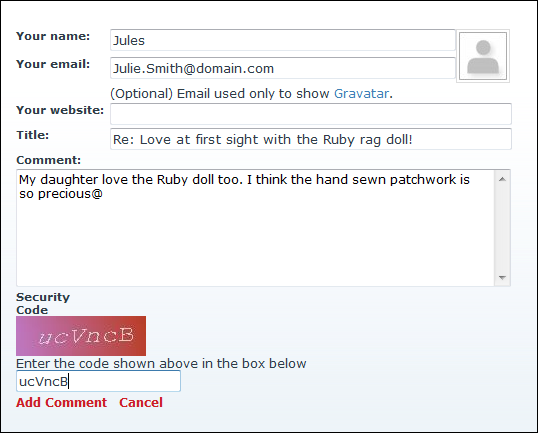
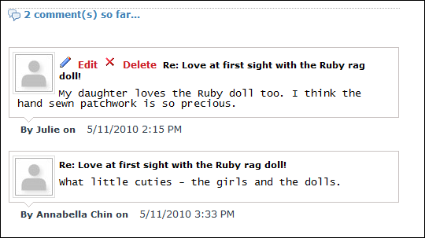

Adding a Blog Comment (Authenticated Users)
How to add a blog entry comment on the Blog module as an authenticated user. Note: Comments may be disabled, may require approval or may use the CAPTCHA security code.
- Locate the required blog entry. See "Viewing Blog Entries for a Month", See "Viewing Blog Entries for a Single Date", or See "Viewing Recent Entries for a Single Blog".
- Click the
 Comments link in the bottom right corner of the View_Blog module. This displays the comment entry section.
Comments link in the bottom right corner of the View_Blog module. This displays the comment entry section.

- In the Your Name text box, your username (as set in your profile) is displayed. This is the name included on your comments. Edit your name if desired.
- Optional. If the Your Email field is displayed, it displays the email address entered on your profile. This email will be used to show your Gravatar. You can edit your email address if desired.
- Optional. If the Your Website field is displayed, it displays the website entered on your profile. When your comments display, your user name will include a link to this website. You can edit your website address if desired.

- Optional. In the Title text box, edit the comment title. Note: Editing of this field may be disabled.
- In the Comment text box, enter your comment. Note: Basic HTML formatting may be permitted.
- Optional. In the Security Code text box, enter the displayed security code.
- Click the Add Comment link.
- Optional. If comments require approval the message "Your comment MUST be approved by the blog owner BEFORE it is displayed on the web site. Do you wish to save your comment now?" is displayed.
-
If approval isn't required, the comment is now displayed below the entry.

The Approved Comment Displays Below The Post